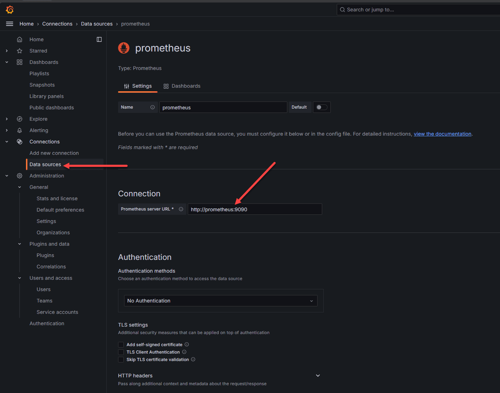
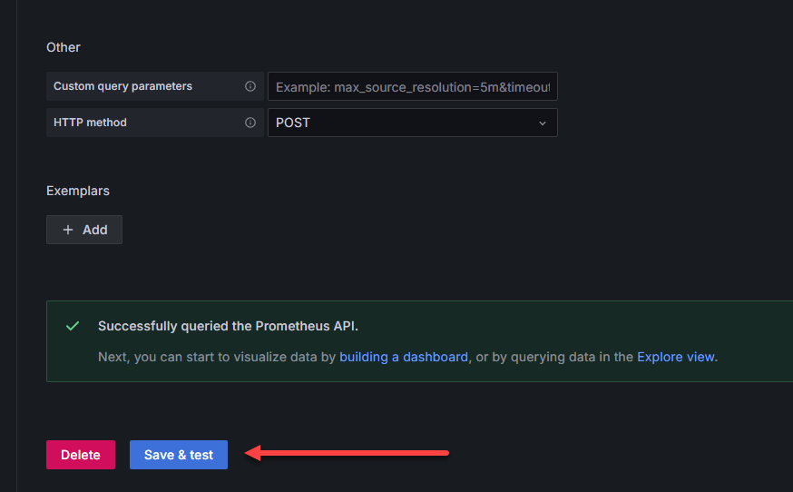
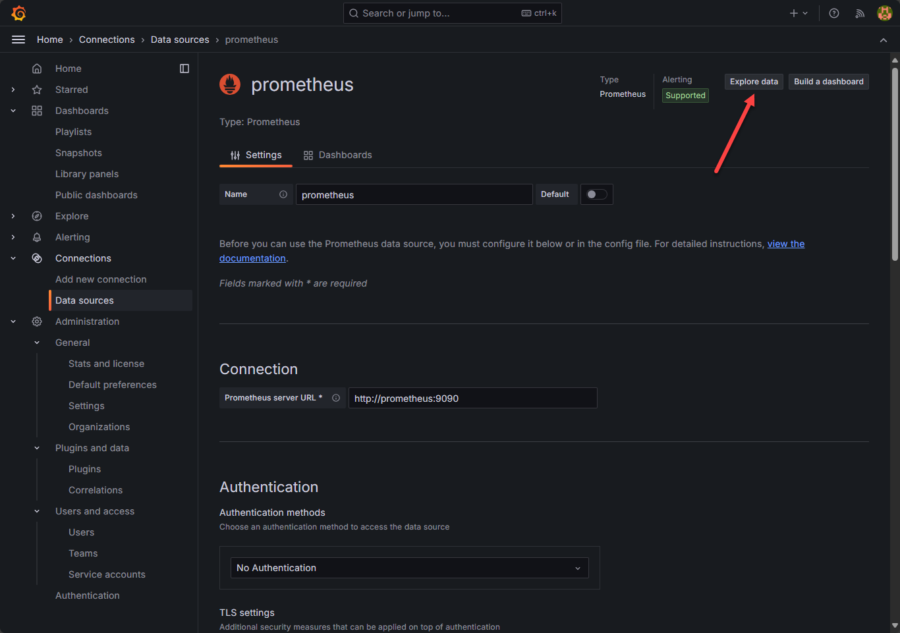
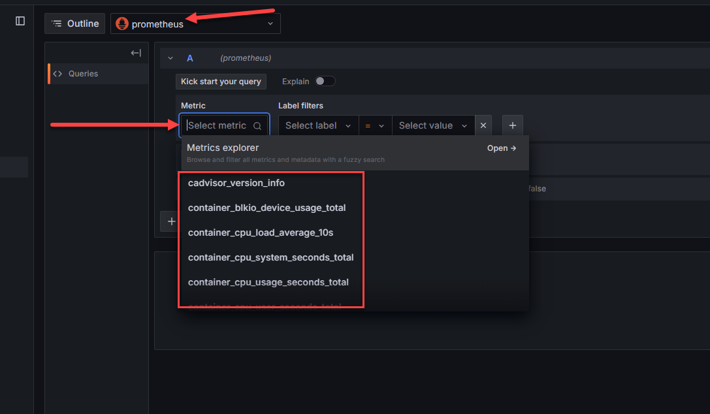
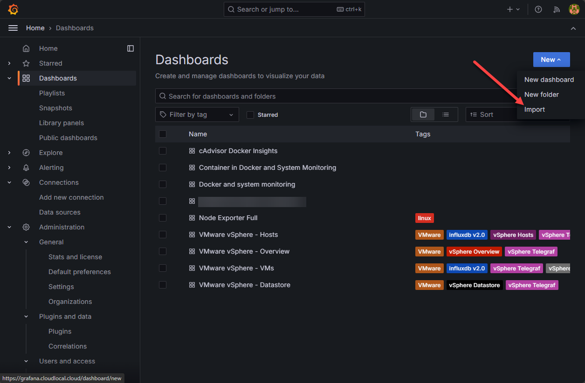
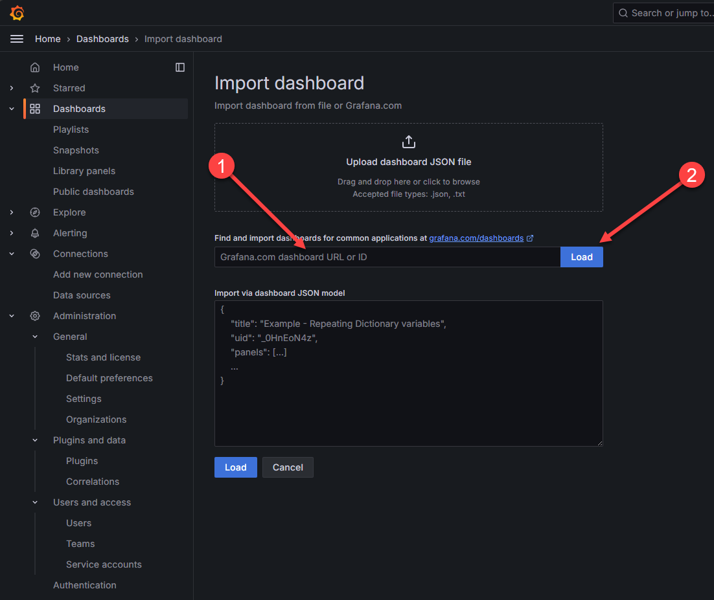
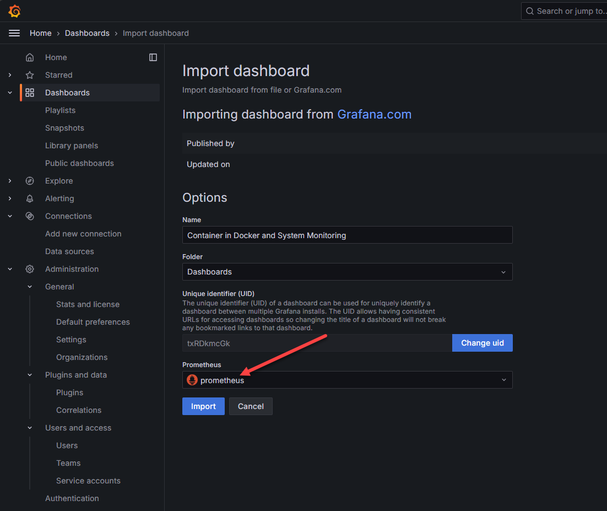
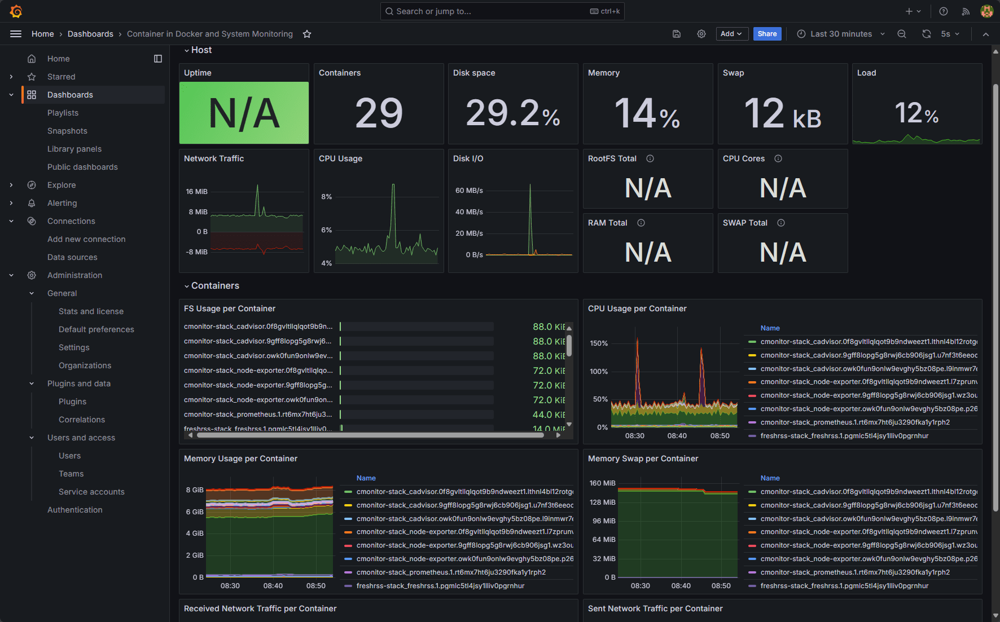
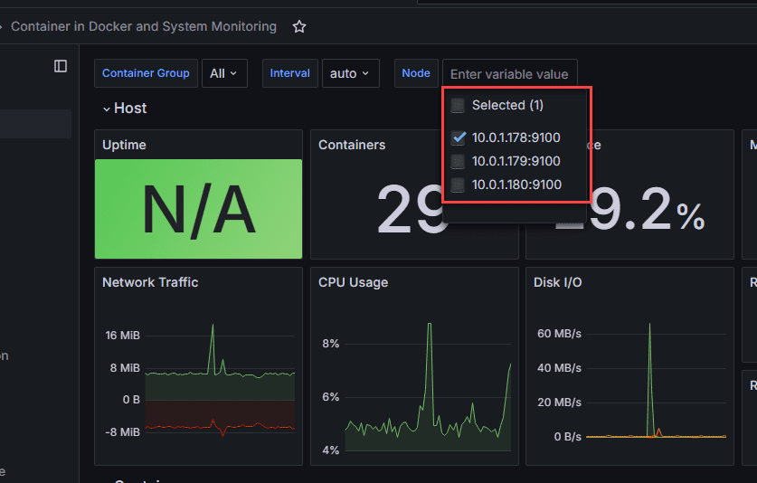
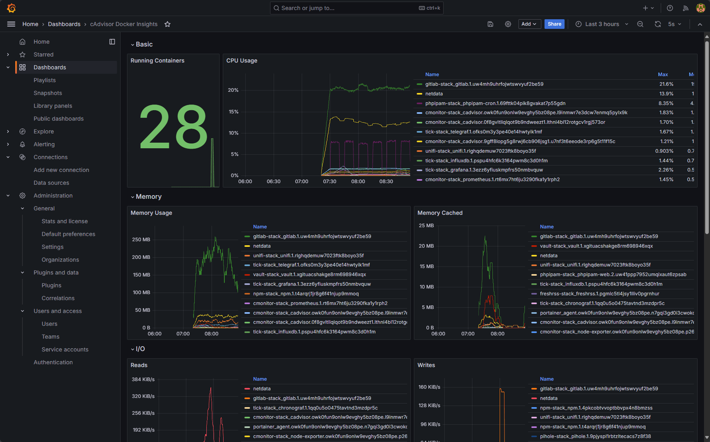

Installing Docker container monitoring is easy with Docker Compose. You can create the monitoring “stack” in Docker Compose and then deploy this to your container hosts.
Note the following Docker Compose code that will stand up your container monitoring system:
version: "3.8"
services:
grafana:
user: "1001"
image: grafana/grafana
container_name: grafana
restart: always
ports:
- 3000:3000
environment:
- GF_PANELS_DISABLE_SANITIZE_HTML=true
- GF_SECURITY_ADMIN_USER=${GRAFANA_USER}
- GF_SECURITY_ADMIN_PASSWORD=${GRAFANA_PASSWORD}
- GF_USERS_ALLOW_SIGN_UP=false
networks:
- monitoring
volumes:
- "/home/linuxadmin/homelabservices/grafana/grafana-volume:/var/lib/grafana"
prometheus:
image: prom/prometheus:latest
container_name: prometheus
restart: always
user: "1001"
ports:
- 9090:9090
environment:
- PUID=1001
- PGID=1001
command:
- '--config.file=/etc/prometheus/prometheus.yml'
- '--log.level=error'
- '--storage.tsdb.path=/prometheus'
- '--storage.tsdb.retention.time=7d'
volumes:
- type: bind
source: "/home/linuxadmin/homelabservices/prometheus"
target: /prometheus
- type: bind
source: "/home/linuxadmin/homelabservices/prometheus/prometheus.yml"
target: /etc/prometheus/prometheus.yml
networks:
- monitoring
cadvisor:
image: gcr.io/cadvisor/cadvisor:v0.47.0
container_name: cadvisor
restart: always
command: -logtostderr -docker_only
volumes:
- type: bind
source: /
target: /rootfs
read_only: true
- type: bind
source: /var/run
target: /var/run
read_only: true
- type: bind
source: /sys
target: /sys
read_only: true
- type: bind
source: /var/lib/docker
target: /var/lib/docker
read_only: true
- type: bind
source: /dev/disk
target: /dev/disk
read_only: true
networks:
- monitoring
node-exporter:
image: prom/node-exporter:v1.5.0
container_name: nodeexporter
restart: always
command:
- '--path.sysfs=/host/sys'
- '--path.procfs=/host/proc'
- '--collector.filesystem.ignored-mount-points=^/(sys|proc|dev|host|etc)($$|/)'
- '--no-collector.ipvs'
volumes:
- type: bind
source: /
target: /rootfs
read_only: true
- type: bind
source: /proc
target: /host/proc
read_only: true
- type: bind
source: /sys
target: /host/sys
read_only: true
networks:
- monitoring
volumes:
prometheus-data:
driver_opts:
type: none
o: bind
device: "/home/linuxadmin/homelabservices/prometheus"
networks:
monitoring:
driver: bridge
You will need to create the prometheus.yml file for configuring Prometheus. Below is an example of what this file would look like using my host addresses:
global:
scrape_interval: 15s # How frequently to scrape targets
evaluation_interval: 15s # How frequently to evaluate rules
scrape_configs:
- job_name: 'docker_swarm'
static_configs:
- targets:
- 10.1.149.59:9100 # Node Exporter running on Swarm node 1
- 10.1.149.60:9100 # Node Exporter running on Swarm node 2
- 10.1.149.61:9100 # Node Exporter running on Swarm node 3
- job_name: 'cadvisor'
static_configs:
- targets:
- 10.1.149.59:8080 # cAdvisor running on Swarm node 1
- 10.1.149.60:8080 # cAdvisor running on Swarm node 2
- 10.1.149.61:8080 # cAdvisor running on Swarm node 3
Once you have your prometheus configuration file in place and directory structure for your persistent data configured, you can bring up the stack with:
docker compose up -d
This Docker Compose code configures a monitoring stack with Grafana, Prometheus, cAdvisor, and Node Exporter running in Docker. Each service is configured to run within a shared overlay network called monitoring.
Now, we will still have a bit of configuration to do, but this is straightforward. First, we need to login to Grafana, and add the Prometheus data source.
Search for Prometheus in the data source catalog of services in Grafana and then in the configuration settings, point the Prometheus server URL to the URL of your internal container. This will be HTTP by default. You can use something like Nginx Proxy Manager to add SSL if you want.
 Setting up connection to prometheus in grafana
At the bottom of the configuration page, there is a Save & test button. Click this to test out the connection to Prometheus. You should get the green box that pops up and says “successfully queried the Prometheus API”.
 Save and test the connection to prometheus
Once you do that, you should be able to Explore data at the top right:
 Explore data in prometheus for docker container monitoring
As you can see here, we are pointed to the Prometheus data source and when you click the drop down for metric, you should see the metrics collected by cadvisor, and node exporter, etc. If you do see the metrics collected, you know the data is successfully being queried by Prometheus.
 Viewing docker container monitoring metrics
Now, we can start importing Grafana community dashboards to visualize this data. In Grafana, navigate to Dashboards > New > Import.
 Importing a grafana community dashboard
This will launch the Import Dashboard dialog. Here we can paste in a community dashboard ID and then click Load.
 Enter the grafana dashboard id and load the dashboard
Here I pasted in the Container in Docker and System Monitoring dashboard that is freely available on the Grafana community dashboard site and is ID: 13112. Once you paste in the ID and hit Load, you will select Prometheus from the Prometheus drop down or whatever you named your Prometheus instance that you just setup.
 Point to your prometheus instance
Great information! It combines both Node Exporter information and cAdvisor to give an overall view of both your container host and the container metrics.
 Viewing a cadvisor metrics dashboard
You can also select which host you want to drill into:
 Selecting a specific host for node exporter metrics
This one is cAdvisor and Docker insights:
 Cadvisor and docker insights for docker container monitoring